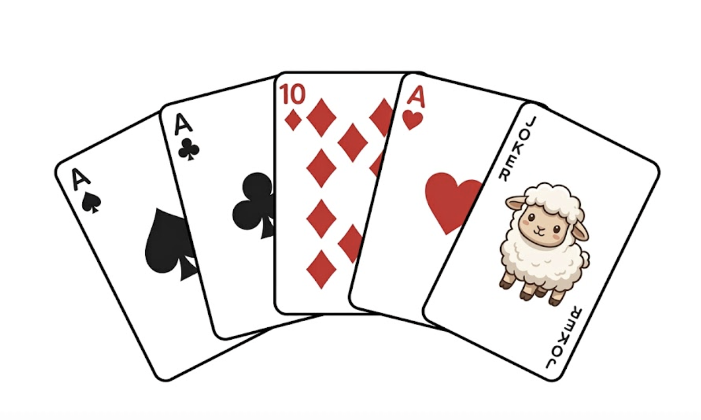

Wyszukiwanie w zbiorze – Liniowo znajdujemy minimum, maksimum
Wymagana wiedza
- Listy (
list) - Pętla
forprzechodząca po elementach
Treści z podstawy programowej
| Dział | Sekcja |
|---|---|
| I. Rozumienie, analizowanie i rozwiązywanie problemów. | 1) Opisuje dane i wyniki. |
| II. Programowanie i rozwiązywanie problemów. | 1) Stosuje zmienne i tablice. |
Wstęp teoretyczny (15 minut)
Aby znaleźć najmniejszą liczbę w worku (liście), zakładamy, że pierwsza z brzegu jest najmniejsza, a potem porównujemy ją z każdą kolejną. Jeśli znajdziemy mniejszą – ona staje się naszym nowym "rekordzistą".
Wspólne eksperymenty (15 minut)
liczby = [7, 3, 9, 1, 5]
najmniejsza = liczby[0]
for x in liczby:
if x < najmniejsza:
najmniejsza = x
print("Najmniejsza liczba to:", najmniejsza)
Zadania do rozwiązania (60 minut)
- Maksimum: Napisz program znajdujący największy element w liście.
- Pozycja: Zmodyfikuj program tak, aby oprócz samej wartości wypisał też indeks (miejsce), na którym znajduje się najmniejsza liczba.
- Rozpiętość: Oblicz różnicę między największą a najmniejszą liczbą w zbiorze (tzw. rozstęp).
- Średnia bez skrajności: Oblicz średnią ocen ucznia, ale odrzuć najniższą i najwyższą ocenę (tak jak w skokach narciarskich).
W Pythonie istnieją gotowe funkcje min(lista) oraz max(lista), ale warto wiedzieć, jak działają "pod spodem".
Zadania do rozwiązania na platformie Szkopuł
Minimum na przedziale
Napisz program, który dla danej tablicy liczb wyznaczy i wypisze wartość minimalną na podanym przedziale indeksów.
Do wczytania danych wykorzystaj polecenia:
import sys
dane = sys.stdin.read().split()
Wejście
W pierwszej linii wejścia znajduje się jedna liczba całkowita \(n\) (\(1 \le n \le 10^6\)), oznaczająca liczbę elementów.
W drugiej linii znajduje się \(n\) liczb całkowitych – każda z przedziału od \(-10^5\) do \(10^5\).
W trzeciej linii znajdują się dwie liczby całkowite oddzielone spacją \(a\) oraz \(b\) (\(0 \le a \le b \le n - 1\)), oznaczające początkowy i końcowy indeks przedziału (indeksowanie od \(0\)).
Wyjście
Twój program powinien wypisać jedną liczbę całkowitą – najmniejszą wartość wśród elementów od indeksu \(a\) do indeksu \(b\) włącznie.
Przykład
| Wejście | Wyjście |
|---|---|
| 6 2 5 4 7 1 8 1 3 |
4 |
Wyjaśnienie: Dla indeksów od 1 do 3 wartości w liście to odpowiednio: \(5\) (indeks 1), \(4\) (indeks 2) oraz \(7\) (indeks 3). Najmniejsza z tych liczb to \(4\).
Wskazówka
Stosując pętlę for lub while, sprawdź każdy element listy pomiędzy indeksami a i b.
Mistrzostwa w brydża dla olimpijczyków

Kuba zapisał się na mistrzostwa w brydża dla olimpijczyków. Brydż to szlachetna gra, w której każdy z czterech graczy dostaje rękę złożoną z dokładnie 13 kart ze standardowej talii. Dla pewności: standardowa talia to taka, w której każda z kart: 2, 3, 4, 5, 6, 7, 8, 9, 10, J, Q, K, A występuje w dokładnie czterech kopiach (kolory kart są nieważne).
Podstawowy system punktacji ręki jest następujący:
* Walet (J) – 1 punkt
* Dama (Q) – 2 punkty
* Król (K) – 3 punkty
* As (A) – 4 punkty
* Pozostałe poprawne karty (2–10) – 0 punktów
Kuba trenując do turnieju ćwiczy liczenie punktów. W tym celu rozdał sobie \(n\) kart i poprosił Cię o wyznaczenie wartości punktowej ręki. Kuba jako znany troll lubi jednak oszukiwać i zaprezentowana ręka niekoniecznie musi być legalna.
Ręka jest nielegalna, jeśli spełniony jest choć jeden z warunków: 1. Nie składa się z dokładnie 13 kart (\(n \neq 13\)). 2. Zawiera niedozwoloną wartość karty (jakąkolwiek inną niż podane powyżej). 3. Zawiera więcej niż 4 kopie którejś z poprawnych kart.
Do wczytania danych wykorzystaj polecenia:
import sys
dane = sys.stdin.read().split()
Wejście
W pierwszym wierszu wejścia znajduje się jedna liczba całkowita \(n\) (\(1 \le n \le 52\)), oznaczająca liczbę kart na ręce Kuby.
Każdy z kolejnych \(n\) wierszy zawiera jeden napis złożony jedynie z cyfr i wielkich liter alfabetu łacińskiego (o długości co najwyżej 5), reprezentujący wartość kolejnej karty.
Wyjście
Twój program powinien wypisać jedną liczbę całkowitą – sumaryczną wartość punktową ręki Kuby, o ile jest ona legalna. Jeśli ręka jest niezgodna z zasadami, wypisz słowo OSZUST!.
Przykład
| Wejście | Wyjście |
|---|---|
| 13 2 3 4 5 6 7 8 9 10 J Q K K |
9 |
| 33 2 2 2 2 3 3 3 3 4 4 4 4 5 5 5 5 6 6 6 6 7 7 7 7 8 8 8 8 9 9 9 9 10 |
OSZUST! |
Wyjaśnienie dla przykładu 1:
Ręka jest zgodna z zasadami (13 kart), warta 9 punktów: 1 za J, 2 za Q i 6 za dwa K.
Wyjaśnienie dla przykładu 2: 33 karty na ręce zamiast 13? OSZUST!
Wskazówka
Najpierw sprawdź, czy \(n == 13\). Jeśli nie, od razu wypisz OSZUST!. Potem, utwórz listę,
która zlicza ile razy wystąpiła każda karta. Przejdź po kartach trzymanych przez Kubę,
i kolejno sprawdzaj, ile razy wystąpił dany rodzaj.